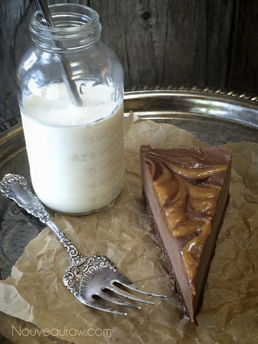

Chocolate Peanut Butter Truffle Cream Pie
~ raw, vegan, gluten-free ~
Looking to create an unforgettable cream pie?… Pull out the stops on this ultra-rich dessert, with the classic combo of chocolate and peanut butter. Rich, creamy, silky, smooth…. just one bite leaves you sinking back in your chair, with the faint sounds of, “mmmmmmm…. on your lips.
I just fell in love with the way that the Raw Fluffy Peanut Butter Dip added a velvety creamy, rustic look and texture to this pie. I am such a huge fan of peanut butter. Back when I was 16 years old, I flew to Eugene, Oregon to visit my dear friend Angie. She was holding down a full-time job and wasn’t able to take time off while I was there, but none the less I enjoyed every moment that we did have together.
One evening after she got off of work we made a frozen peanut butter pie. To be honest, I can’t recall the full recipe but it was filled with sugar, chocolate, and peanut butter. It was huge and beautiful. We slid it into the freezer to set overnight. The next day off to work she went and there I was… held prisoner in the house along with that peanut butter pie!
I didn’t dare break into it before she got off work, that would just be wrong or so I convinced myself. I will admit though, that I opened the freezer door to check in on it about every hour, on the hour. I had to poke it to see if it was setting up… actually in hopes that some would end up on my figure so I could get a little taste of it, but nooooo, it was set hard. I don’t know about Angie, but that was the longest 6-hour shift that she ever worked!
Once she got home, no sooner did she enter the house, then I shot straight to the freezer and pulled that puppy out! Dessert before dinner was happening that night. I only had that pie once in my life but it left a strong enough footprint in my culinary, gluttony mind to dream about every so often. Isn’t it amazing how foods can haunt you?! So when it came time to make this dessert, you can bet that I was quite excited. Even though I used different ingredients, which are much healthier, this pie satisfied my 27-year craving. Shew!
Yields 12-14 slices using a 9-inch springform pan
Crust:
Chocolate filling:
- 3 cups cashews, soaked 2+ hours
- 3/4 cup water
- 3/4 cup maple syrup
- 6 Tbsp raw cacao powder
- 1 tsp vanilla extract
- 1/4 tsp Himalayan pink salt
- 3/4 cup melted coconut oil
- 2 Tbsp sunflower lecithin powder or liquid
Peanut butter swirl:
Preparation:
Crust:
- In a food processor, fitted with the “S” blade, combine the hazelnuts and salt. Process until the hazelnuts break down to a small crumble.
- Add cacao powder and pulse together.
- Add date paste and agave. Process all ingredients until the crust starts to rise on the sides of the bowl and sticks together when pinched. Be sure to stop and scrape the sides down.
- Assemble the springform pan with the bottom facing up. The opposite way from how it comes assembled. This will help you when removing the cheesecake from the pan, not having to fight with the lip). Lightly grease the pan with coconut oil or cover the base with plastic wrap.
- Distribute the crust evenly on the bottom of the pan, using even and gentle pressure. If you press too hard it might stick, making it hard to remove slices. You can either just make the crust on the bottom of the pan or you can also bring it up the sides. It is up to you.
- Set aside while you make the cheesecake batter.
Filling:
- After soaking the cashews, drain and discard the soak water.
- To a high-speed blender, blend the cashews, water, agave, cacao, vanilla, and salt together. Blend until nice a creamy. This can take 3-5 minutes.
- While the blender is running and a vortex is created, drizzle in the coconut oil, then add the lecithin, blending just until well mixed.
- Pour 1/2 of the batter into the Springform pan, spread with a spatula, coving the whole crust.
- Place 5 (1 tbsp) dollops of the peanut buttercream around the pan and with a wooden skewer swirl the peanut buttercream into the chocolate. Be careful not to drag the stick along the bottom of the crust.
- Pour in the remaining chocolate filling and spread evenly.
- Place 5 (1 tbsp) dollops of the peanut buttercream around the pan and with a wooden skewer swirl the peanut buttercream into the chocolate.
- Place your cheesecake in the freezer to set for 1-2 hours or until the middle of the cake is firm to the touch.
- Storage and shelf life: This pie will keep for at least 4 days, store in the fridge, covered. Or freeze for up to 3 months.
Raw Fluffy Peanut Butter Dip


© AmieSue.com